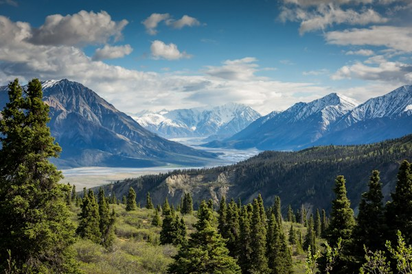
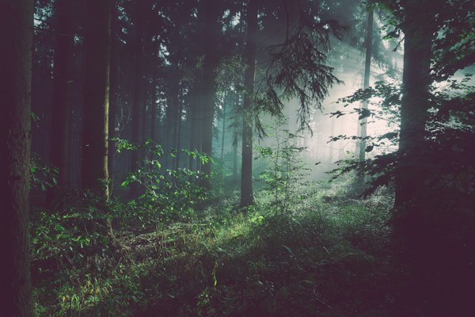

Destinos y Paisajes Naturales
🌿 Componente Bootstrap: Alerta Informativa
¡Bienvenido a la Página 1! Explora los paisajes más impresionantes y descubre las recomendaciones para practicar senderismo de forma responsable.Viajar y explorar parajes naturales ofrece una oportunidad inigualable para desconectarse de la rutina cotidiana y sumergirse en la majestuosidad de la tierra. Desde imponentes cumbres alpinas hasta costas tropicales de arena fina, la diversidad geográfica del planeta brinda experiencias memorables para todo tipo de aventureros.
Las montañas han ejercido siempre una fascinación especial en la humanidad. Realizar rutas de senderismo y escalada en estos ecosistemas no solo permite apreciar vistas panorámicas espectaculares, sino que también fomenta la resiliencia, el acondicionamiento físico y un profundo respeto hacia las fuerzas de la naturaleza y su preservación.
Galería de Destinos (Componente Bootstrap: Cards)

Cordilleras Nevadas
Majestuosas alturas que desafían los límites del horizonte y albergan glaciares milenarios.
Costas Tropicales
Playas cálidas de aguas turquesas ideales para el descanso, el buceo y la contemplación marina.

Bosques Nubosos
Frondosos senderos rodeados de árboles centenarios, fauna autóctona y aire completamente puro.
Al visitar cualquier entorno natural, es imperativo adoptar una ética de conservación basada en el principio de «no dejar rastro». Llevar consigo todos los residuos generados, respetar la flora y fauna local y mantenerse en los senderos señalizados garantiza que estas maravillas permanezcan intactas para las futuras generaciones.